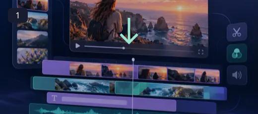
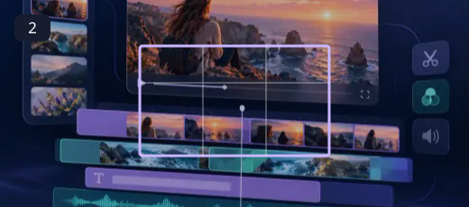
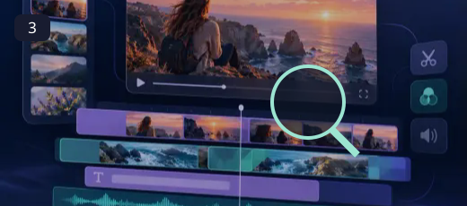
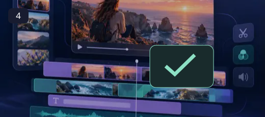

Video Editor
Give every clip a clear purpose. Bring pictures, sound and a few well-chosen words together in one timeline.
A memorable video rarely needs more footage. It needs the right footage in the right order. Build the story with a main video track, add a short title where it earns its place, and bring in background audio at a level that leaves room for the original sound. The best edit gives viewers one clear thing to notice at a time.
How to use Video Editor ↓How to use Video Editor

Import clips, images and audio
Use the source or input described here. Keep your original so that you can return to it later.

Arrange tracks and split at the playhead
Use the controls in the workspace above. Make one change at a time so that its effect is easy to understand.

Adjust titles, crop, color and volume
Review the preview at its intended size. Check the details that matter for your destination.

Export MP4 and review the result
Save a separate output and open it before sharing. A preview and a downloaded file should both be reviewed.
Make room for the message
Use a title to introduce a person, explain a moment or finish with a useful next step. Choose a readable font, keep the wording short, and place it where it does not cover the subject. Match the project ratio to its destination before arranging overlays. Scrub across every cut and listen through the whole timeline before exporting.
- Arrange separate video, image, title and audio layers.
- Fine-tune crop, position, color and volume.
- Export a composed MP4 file on your device.
Use a title to introduce a person, explain a moment or finish with a useful next step. Choose a readable font, keep the wording short, and place it where it does not cover the subject. Match the project ratio to its destination before arranging overlays. Scrub across every cut and listen through the whole timeline before exporting.
Questions, answered
Will this replace my original file?
The tools create a separate output. Keep the original until you have checked the exported file; the site does not provide cloud project backups.
Can I publish the result?
Use source media you own or have permission to edit. Check the destination’s requirements and the rights of anyone shown before publishing.